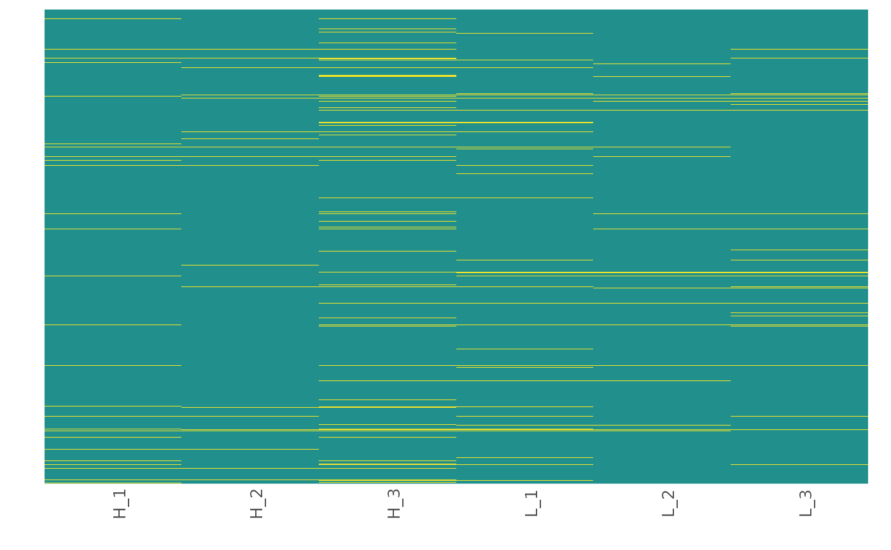
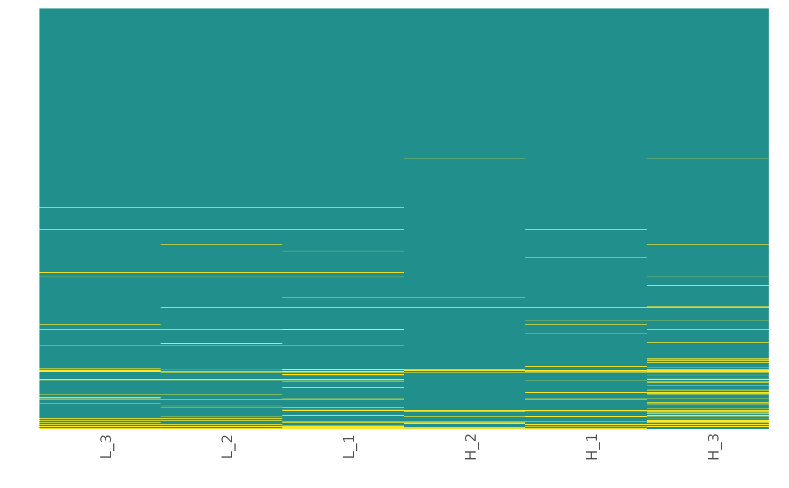
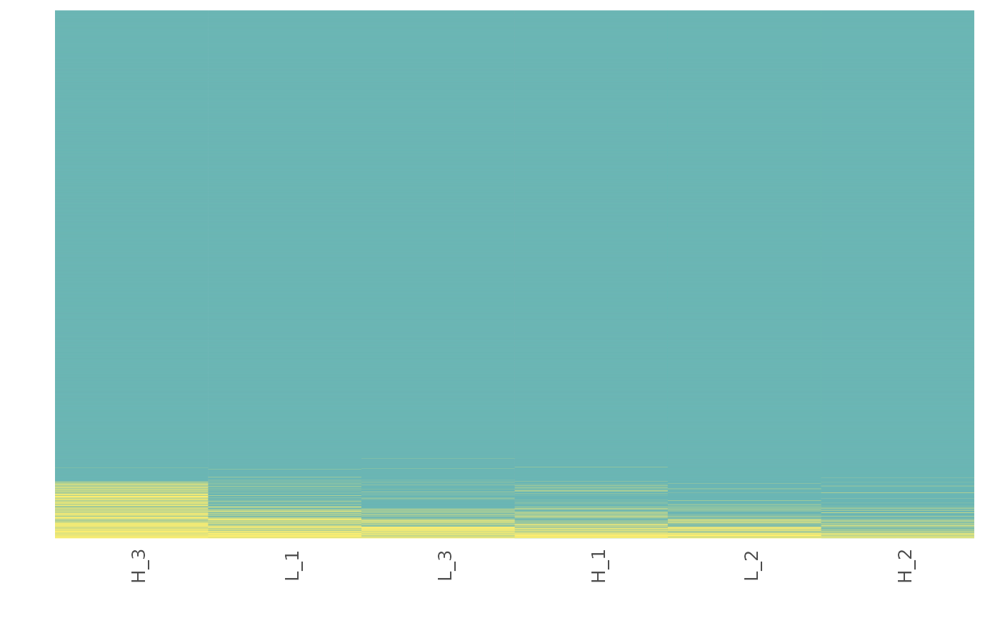
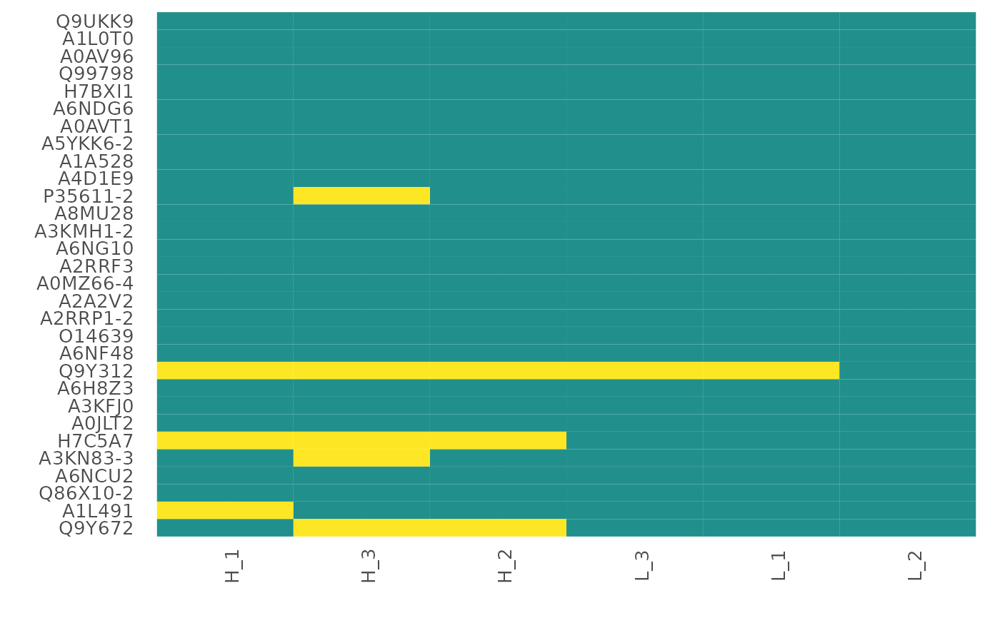

This function visualizes the patterns of missing value occurrence using a heatmap.
Usage
heatmap_na(
raw_df,
protein_range,
sample_range,
reorder_x = FALSE,
reorder_y = FALSE,
x_fun = mean,
y_fun = mean,
palette = "viridis",
label_proteins = FALSE,
text_size = 10,
save = FALSE,
file_type = "pdf",
file_path = NULL,
file_name = "Missing_data_heatmap",
plot_width = 15,
plot_height = 15,
dpi = 80
)Arguments
- raw_df
A
raw_dfobject (output fromcreate_df).- protein_range
The range or subset of proteins (rows) to plot. If not provided, all the proteins (rows) in the data frame will be used.
- sample_range
The range of samples to plot. If not provided, all the samples (columns) in the data frame will be used.
- reorder_x
Logical. If
TRUEsamples on the x axis are reordered using the function given inx_fun. Default isFALSE.- reorder_y
Logical. If
TRUEproteins in the y axis are reordered using the function given iny_fun. Default isFALSE.- x_fun
Function to reorder samples along the x axis. Possible options are
meanandsum. Default ismean.- y_fun
Function to reorder proteins along the y axis. Possible options are
meanandsum. Default ismean.- palette
Viridis color palette option for plots. Default is
"viridis". Seeviridisfor available options.- label_proteins
If
TRUEproteins on the y axis will be labeled with their Majority Protein IDs. Default isFALSE.- text_size
Text size for axis labels. Default is
10.- save
Logical. If
TRUEsaves a copy of the plot in the directory provided infile_path.- file_type
File type to save the heatmap. Default is
"pdf".- file_path
A string containing the directory path to save the file.
- file_name
File name to save the heatmap. Default is
"Missing_data_heatmap".- plot_width
Width of the plot. Default is
15.- plot_height
Height of the plot. Default is
15.- dpi
Plot resolution. Default is
80.
Details
This function visualizes patterns of missing value occurrence using a
heatmap. The user can choose to reorder the axes using the available functions
(x_fun, y_fun) to better understand the underlying cause of
missing data.
Examples
## Generate a raw_df object with default settings. No technical replicates.
raw_df <- create_df(
prot_groups = "https://raw.githubusercontent.com/caranathunge/promor_example_data/main/pg1.txt",
exp_design = "https://raw.githubusercontent.com/caranathunge/promor_example_data/main/ed1.txt"
)
#> 0 empty row(s) removed.
#> 0 empty column(s) removed.
#> 80 protein(s) (rows) only identified by site removed.
#> 65 reverse protein(s) (rows) removed.
#> 42 protein potential contaminant(s) (rows) removed.
#> 1923 protein(s) identified by 2 or fewer unique peptides removed.
#> Zeros have been replaced with NAs.
#> Data have been log-transformed.
## Missing data heatmap with default settings.
heatmap_na(raw_df)

## Missing data heatmap with x and y axes reordered by the mean (default) of
## protein intensity.
heatmap_na(raw_df,
reorder_x = TRUE, reorder_y = TRUE
)

## Missing data heatmap with x and y axes reordered by the sum of
## protein intensity.
heatmap_na(raw_df,
reorder_x = TRUE, reorder_y = TRUE, x_fun = sum,
y_fun = sum
)

## Missing data heatmap for a subset of the proteins with x and y axes
## reordered by the mean (default) of protein intensity and the y axis
## labeled with protein IDs.
heatmap_na(raw_df,
protein_range = 1:30,
reorder_x = TRUE, reorder_y = TRUE,
label_proteins = TRUE
)
